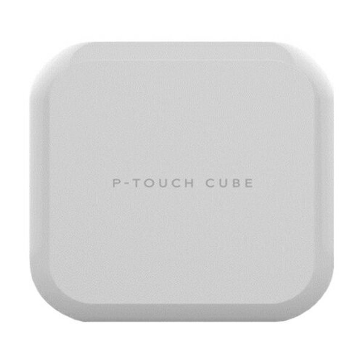
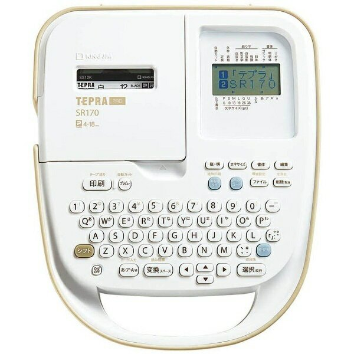
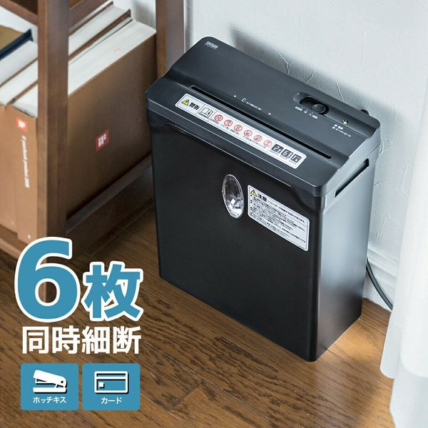
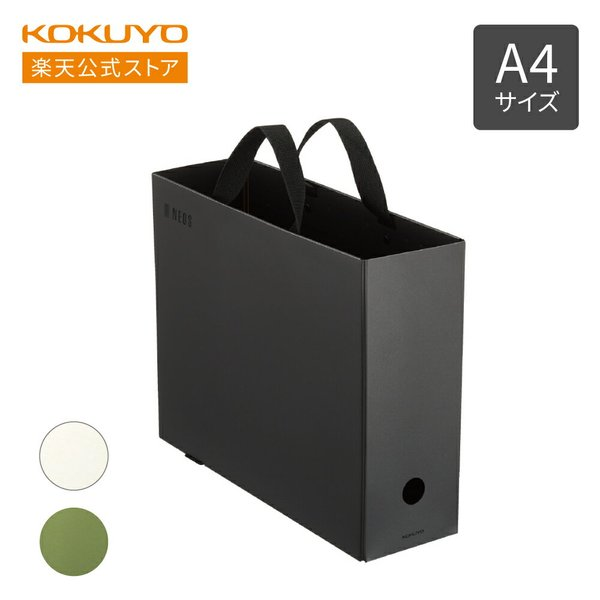
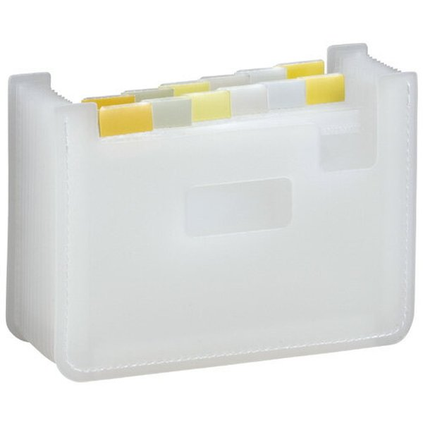
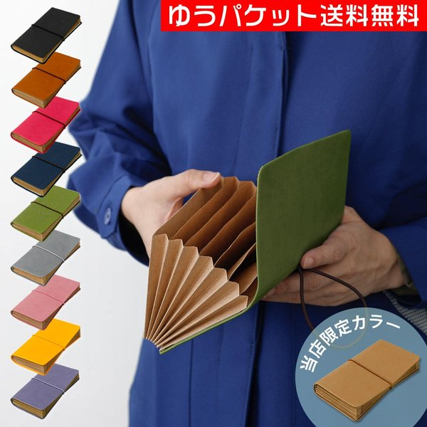
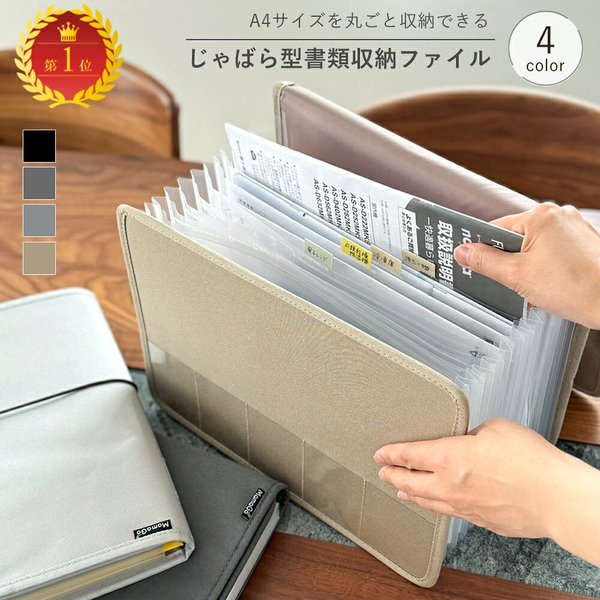
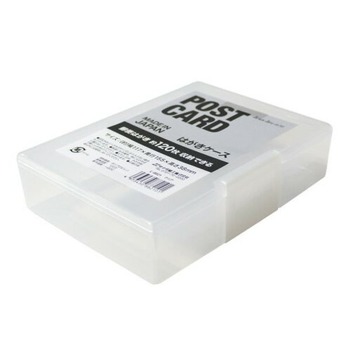
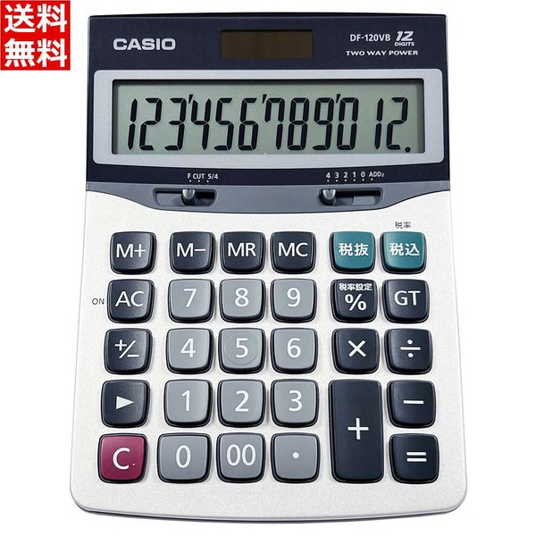
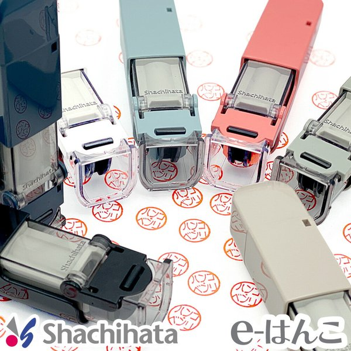

【2026年・年末の書類整理】ピータッチキューブ・テプラPRO・静音シュレッダー・コクヨNEOS・セマック・パヴォ・書類ファイル・はがきケース・カシオ電卓・シャチハタ印鑑ホルダー10選
年末にたまるのは、お金でも物でもなく紙です。郵便物、領収書、取扱説明書、年賀状。1年分をためてから片づけると、どこから手をつけていいか分からなくなります。
選ぶ軸は3つです。「まず捨てる」。シュレッダーがあると、個人情報を含む紙をその場で処分できます。「次に分ける」。書類は、残すもの・家計・説明書の3つに分けるだけで、探す時間が減ります。「最後に名付ける」。ラベルライターで背表紙に名前を貼ると、家族も元の場所に戻せます。なお、レビュー件数が50件に満たない商品は記事内に実数を明記しています。
本記事では、楽天市場で人気・高評価の書類・領収書・年賀状・家計整理グッズ10選を、実売価格とレビュー評価つきで写真付き紹介します。
- おすすめ10選 スペック・特徴比較表
- BEST 1｜ピータッチキューブ PT-P710BT ラベルライター
- BEST 2｜テプラPRO SR170 ラベルライター
- BEST 3｜静音 クロスカット 家庭用シュレッダー A4
- BEST 4｜収納ボックス NEOS A4 取っ手付き
- BEST 5｜セマック ドキュメントスタンド MA-3060-70
- BEST 6｜パヴォ レシートホルダー じゃばら式
- BEST 7｜じゃばら型 書類収納ファイル 13ポケット インデックス付き
- BEST 8｜はがきケース L-8821 年賀状・ハガキ収納
- BEST 9｜スタンダード電卓 DF-120VB-N 12桁
- BEST 10｜ハンコ・ベンリN ワンタッチ式印鑑ホルダー
- 【読者負担0円】買わなくても得する無料サービス
- まとめ：書類・領収書・年賀状の整理グッズ10選の選び方
| 順位 | 商品名 | ブランド | 最大の特徴・おすすめ理由 | 総合評価 |
|---|---|---|---|---|
| BEST 1 | ピータッチキューブ PT-P710BT ラベルライター | ブラザー（brother） | スマホ・PCからラベルを作れる | 4.61 |
| BEST 2 | テプラPRO SR170 ラベルライター | キングジム（KING JIM） | キーボードですぐ印刷できる | 4.51 |
| BEST 3 | 静音 クロスカット 家庭用シュレッダー A4 | サンワサプライ | A4をクロスカットで細断できる | 4.15 |
| BEST 4 | 収納ボックス NEOS A4 取っ手付き | コクヨ（KOKUYO） | A4書類がまとめて収納できる | 4.63 |
| BEST 5 | セマック ドキュメントスタンド MA-3060-70 | セキセイ | じゃばら式で書類を分けられる | 4.61 |
| BEST 6 | パヴォ レシートホルダー じゃばら式 | HIGHTIDE（ハイタイド） | 7ポケットでレシートを分けられる | 4.45 |
| BEST 7 | じゃばら型 書類収納ファイル 13ポケット インデックス付き | 書類収納ファイル（ノーブランド企画品） | 13ポケットに書類を分けられる | 4.57 |
| BEST 8 | はがきケース L-8821 年賀状・ハガキ収納 | サナダ精工 | はがきがまとめて入る | 4.50 |
| BEST 9 | スタンダード電卓 DF-120VB-N 12桁 | カシオ（CASIO） | 12桁表示で大きな数字も読める | 4.68 |
| BEST 10 | ハンコ・ベンリN ワンタッチ式印鑑ホルダー | シャチハタ（Shachihata） | ワンタッチで印鑑を出し入れできる | 4.32 |
ピータッチキューブ PT-P710BT ラベルライター

ブラザーのピータッチキューブは、手のひらサイズのラベルライターです。スマホやパソコンから文字を送って印刷でき、テープ幅は最大24mm。引き出しやファイルボックスの背表紙、コードの識別、子どもの持ち物の名前付けまで、これ1台でラベルを作れます。本体は白い立方体で、使わないときは引き出しにしまえるサイズです。楽天市場での実売価格は約13,876円（2026年11月時点）。
- スマホ・PCからラベルを作れる
- テープ幅24mmまで対応
- 手のひらサイズで置き場所に困らない
- テープカートリッジを切らすと使えないので、予備を一緒に用意する
テプラPRO SR170 ラベルライター

キングジムのテプラPRO SR170は、キーボードで直接入力して印刷するタイプのラベルライターです。パソコンを立ち上げずに、その場ですぐラベルを作れるのが強み。テープ幅は18mmまで対応し、宛名ラベルやファイルの背表紙、年賀状の整理ラベルまで幅広く使えます。電池でも動くので、コンセントのない場所でも使えます。楽天市場での実売価格は約6,980円（2026年11月時点）。
- キーボードですぐ印刷できる
- テープ幅18mmまで対応
- 電池駆動でコンセント不要
- パソコンからの入力には対応しておらず、長い文章は本体で打つ必要がある
静音 クロスカット 家庭用シュレッダー A4

サンワサプライの家庭用シュレッダーは、A4用紙をクロスカットで細断する卓上タイプです。ホッチキスとカードにも対応し、6枚まで同時に細断できます。細断後の紙くずは袋に入れて捨てられるので、個人情報を含む書類を年末にまとめて処分するときに便利。コンパクトで、デスクの下に置いても邪魔になりません。楽天市場での実売価格は約5,980円（2026年11月時点）。
- A4をクロスカットで細断できる
- ホッチキスとカードに対応
- 6枚まで同時に細断できる
- 連続使用の時間に制限があるので、大量の書類は時間を分けて処理する
収納ボックス NEOS A4 取っ手付き

コクヨのNEOSは、A4サイズの書類をまとめて収納できるボックスです。取っ手が付いているので、棚から引き出して持ち運べます。色は黒と白から選べ、リビングの棚に置いても生活感が出にくいデザイン。領収書や取扱説明書をまとめて入れ、ボックスの外にラベルを貼れば、どこに何があるか一目で分かります。楽天市場での実売価格は約1,000円（2026年11月時点）。
- A4書類がまとめて収納できる
- 取っ手付きで持ち運べる
- 黒・白の2色で棚に馴染む
- フタは付かないので、ほこりを避けたい書類は別のケースに入れる
セマック ドキュメントスタンド MA-3060-70

セキセイのセマックは、じゃばら状のポケットに書類を差し込んで整理するスタンドです。ポストカードサイズで、はがきや領収書、シール台紙の整理に向いています。使わないときは折りたたんで薄くできるので、引き出しの中にしまえます。卓上に置いて、よく使う書類をすぐ取り出せる状態にしておくと便利です。楽天市場での実売価格は約990円（2026年11月時点）。
- じゃばら式で書類を分けられる
- はがき・領収書サイズに合う
- 折りたたんで薄くしまえる
- ポストカードサイズなので、A4の書類は入らない
パヴォ レシートホルダー じゃばら式

HIGHTIDEのパヴォは、じゃばら式のレシートホルダーです。ポケットが7つあり、月ごとや店舗ごとにレシートを分けて入れられます。紙製で軽く、鞄に入れてもかさばりません。家計簿をつけるときに、レシートを探す時間が減るのがいちばんの効果。カラー展開が多く、色で用途を分ける使い方もできます。楽天市場での実売価格は約935円（2026年11月時点）。
- 7ポケットでレシートを分けられる
- 紙製で軽く鞄に入れやすい
- カラーで用途を分けられる
- 紙製なので、水に濡れると傷みやすい
じゃばら型 書類収納ファイル 13ポケット インデックス付き

じゃばら状に広がるA4の書類収納ファイルです。13ポケットに分かれ、インデックスシートが付いているので、取扱説明書や保証書を家電ごとに分けて入れられます。自立するので、開いたままデスクに置いても倒れません。年度ごとにファイルを分けておけば、必要な書類を探す時間が短くなります。楽天市場での実売価格は約2,980円（2026年11月時点）。
- 13ポケットに書類を分けられる
- インデックス付きで探しやすい
- 自立するので開いたまま置ける
- ポケットが増えると厚みが出て、いっぱいに入れると閉じにくい
はがきケース L-8821 年賀状・ハガキ収納

サナダ精工のはがきケースは、はがきをまとめて入れる透明のケースです。年賀状や暑中見舞いを年ごとに分けて保管でき、中身が見えるので探しやすいのが利点。ふたが付いているので、引き出しの中でほこりをかぶりません。年賀状を出す相手のリストと、届いたはがきを同じケースにまとめておくと、次の年のお礼状がすぐ書けます。楽天市場での実売価格は約118円（2026年11月時点）。
- はがきがまとめて入る
- 透明で中身が見える
- ふた付きでほこりを防げる
- レビューは36件と少なく、はがき以外のサイズは入らない
スタンダード電卓 DF-120VB-N 12桁

カシオのDF-120VB-Nは、12桁表示のデスクタイプ電卓です。大きな液晶で桁が読みやすく、消費税率の設定と変更に対応しています。家計の計算や確定申告の数字確認など、画面の数字を長く見る作業に向いています。キーの押し心地がしっかりしているので、打ち間違いが少ないのも助かります。楽天市場での実売価格は約1,750円（2026年11月時点）。
- 12桁表示で大きな数字も読める
- 消費税率の設定・変更ができる
- キーが押しやすく打ち間違いが少ない
- デスクタイプなので、持ち歩きには向かない
ハンコ・ベンリN ワンタッチ式印鑑ホルダー

シャチハタのハンコ・ベンリNは、印鑑をワンタッチで出し入れできるホルダーです。使うときにキャップを外す手間がなく、押したあとはそのまましまうだけ。印鑑ケースを開けて探す時間がなくなるので、宅配便の受け取りや書類の訂正が素早く済みます。カラーが複数あり、家族それぞれの色に分けておけます。楽天市場での実売価格は約660円（2026年11月時点）。
- ワンタッチで印鑑を出し入れできる
- キャップを外す手間がない
- 色分けして家族で使い分けられる
- 対応する印鑑のサイズが決まっているので、手持ちの印鑑の直径を確認する
この記事の商品を買う前に、まずは無料で得する選択肢をチェック。どれも登録・利用は0円で、無料期間中に解約すれば料金はかかりません。読みたい雑誌がある人、ポイントを貯めたい人、アンケートなら気軽という人、それぞれに合うものを選べます。
初回31日無料・無料期間中に解約すれば0円 → 楽天ポイントモール｜登録無料で毎日ポイ活
買い物なしでもポイントが貯まる無料サービス → 楽天インサイト｜アンケートに答えてポイント
登録無料・すきま時間のアンケートで貯まる → 楽天カード｜年会費永年無料
新規発行・年会費ずっと0円 →
4つのサービスの違いと使い分けは「出費0円で得する！買わずにポイントが貯まる無料サービス厳選4選」でまとめています。
💡 まとめ：書類・領収書・年賀状の整理グッズ10選の選び方
書類整理は、捨てる・分ける・名付けるの3つで一気に進みます。捨てる道具は、サンワサプライの静音クロスカットシュレッダー。分ける道具は、コクヨNEOSの収納ボックスに書類をまとめ、セキセイ セマックとHIGHTIDE パヴォのレシートホルダーで小さい紙を分け、じゃばら式の書類収納ファイルに取扱説明書と保証書を入れます。年賀状はサナダ精工のはがきケースで年ごとに保管。名付ける道具は、スマホから印刷できるブラザーのピータッチキューブか、その場で打てるキングジムのテプラPRO SR170。家計の計算はカシオの12桁電卓、届いた荷物の受け取りはシャチハタの印鑑ホルダーを玄関に置いておくと、書類まわりの小さな手間がまとめて減ります。
楽天市場では「5と0のつく日」や「お買い物マラソン」などのキャンペーンに合わせて購入すると、ポイント還元が最大化してお得に手に入ります。ぜひチェックしてみてくださいね。